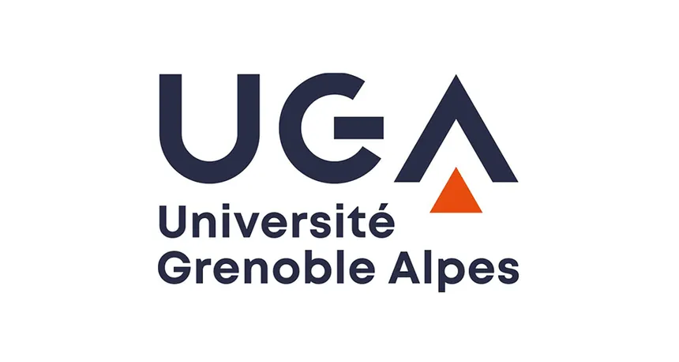

Université Grenoble Alpes (UGA)
Localisation : Grenoble / Région Auvergne‑Rhône‑Alpes
Université de recherche reconnue pour ses formations en sciences, ingénierie, informatique, montagne et environnement. Forte collaboration avec les laboratoires et les pôles technologiques locaux.